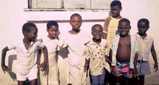

|
My sister, my brother. You are welcome. Enter. Novinye. Miawoezo. Ame. I hope you are well. I am glad to see you. Come, read with me the Coded Messages. We will meet transcendence. We will meet cold limitation. It is the way of the world. |
CHAINS
<==> representation. In the Middle Ages,
 people thought you could fall off the edge of the earth.
Now you can just
fall off the edge of the information superhighway.
people thought you could fall off the edge of the earth.
Now you can just
fall off the edge of the information superhighway. |
 |
| The
|
Read the
Annotated
Coded Messages: CHAINS
to learn about this work.

This installation is dedicated to the children of Anyako.